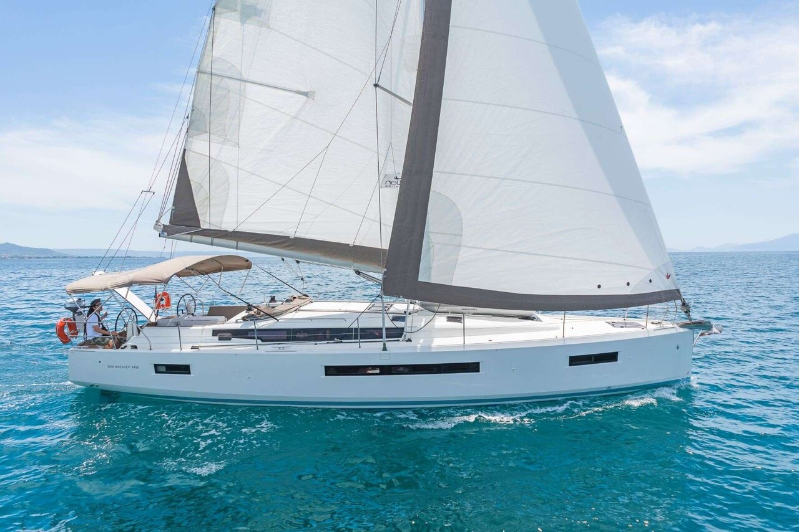
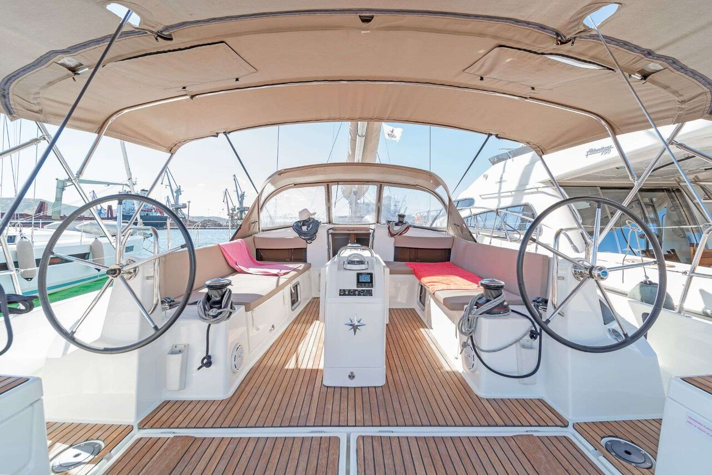
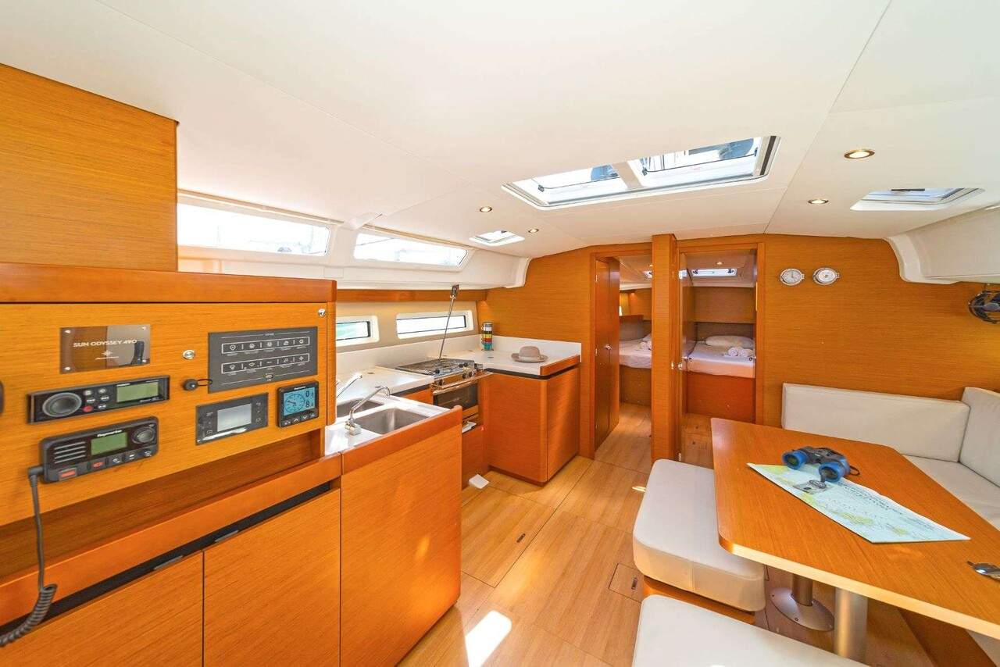

Честный тест-драйв Jeanneau Sun Odyssey 490: Палубная революция и скрытые риски
Детальный инженерный разбор флагмана линейки Sun Odyssey. Инновационная концепция Walk Around от Филиппа Бриана, трансформируемый кокпит и анализ громкой отзывной кампании.
⚓️ В двух словах: кто есть кто
Jeanneau Sun Odyssey 490 — это 49-футовая (14.42 м) парусная яхта, созданная в 2018 году как флагман обновлённой линейки Sun Odyssey. Её проектированием занимался знаменитый архитектор Филипп Бриан (Philippe Briand), известный по работе с America‘s Cup и дизайном суперъяхт. Интерьеры разработало бюро Piaton Bonet.
К 2020 году модель уже успела собрать урожай наград: Miami Innovation Award 2018 и Cruising World Boat of the Year 2019. И это не случайно — именно Sun Odyssey 490 ворвалась на рынок с концепцией «Walk Around», которая кардинально изменила представление о том, как мы перемещаемся по палубе.
📊 Технические характеристики
📸 Фотохроника и палубная эргономика



👍 Сильные стороны: за что мы ценим Jeanneau 490
Walk Around Deck — революция на палубе: На Sun Odyssey 490 боковые палубы плавно спускаются к кокпиту без единой ступеньки. Вы можете пройти от транца вокруг рулевого поста до носа, ни разу не переступая комингс. Рулевые посты вынесены вперёд — можно сидеть лицом вперёд и комфортно управлять лодкой.
Кокпит-трансформер: Сиденья поднимаются и превращаются в шезлонги. Задняя часть кокпита со столом опускается, образуя огромную платформу. В кормовом диване спрятан гриль, а в столе — охлаждаемый ящик для продуктов. На стоянке яхта превращается в полноценную пляжную террасу.
Кастомизация интерьера (от 2 до 5 кают): Владельческая версия предлагает настоящую «suite parentale» с кроватью 1.60 х 2 метра, гардеробной и отдельным санузлом с раздельной душевой. Салон залит светом благодаря панорамному остеклению, а центральный П-образный камбуз максимально удобен при готовке на ходу.
Ходовые качества и управляемость: Жёсткий скуловой киль по всей длине и два пера руля обеспечивают отличную остойчивость. В средний ветер (14–16 узлов) яхта уверенно выходит на 8.1 узла под 60 градусов. Лебёдки Harken вынесены на тумбы вперёд — экипаж работает лицом к парусам и полностью контролирует ситуацию.
👎 Слабые стороны и болевые точки
- ⚠️ Риски подруливающего устройства (Recall): В 2023–2024 годах верфь провела крупный отзыв моделей Sun Odyssey из-за дефекта фиксации фланца выдвижной подрульки Sleipner. Разрушение узла могло привести к быстрому затоплению лодки. При осмотре бортов этих лет проверка усиления конструкции обязательна.
- Капризная электроника: Встречаются системные жалобы владельцев на сбои многофункциональных дисплеев Raymarine (глюки тачскрина на солнце) и отказы автоматики подруливающего механизма.
- Теснота в узких маринах: Из-за огромной ширины (4.49 м) лодка требует повышенной концентрации при швартовках задним ходом в тесных старых гаванях Европы. Смещённый стол кокпита иногда мешает сквозному проходу.
- Ценовой порог: Это дорогая лодка премиального сегмента серийных круизеров. Стоимость укомплектованных вариантов на вторичном рынке прочно держится в диапазоне от €300,000 до $500,000+.
💎 Вердикт
Jeanneau Sun Odyssey 490 — инженерная декларация о том, что скука в круизном классе отменяется. Она создана дарить радость от пилотирования и комфорт премиум-класса в равной мере. Она идеальна для семейных переходов или опытных шкиперов, ценящих прогресс. Но за инновации, сложную гидравлику и габариты приходится платить полную цену.
PS: При осмотре конкретного борта строго требуйте документальное подтверждение прохождения официального отзыва по фланцу подрульки. Проверьте тачскрин Raymarine и механизмы трансформации стола в кокпите.